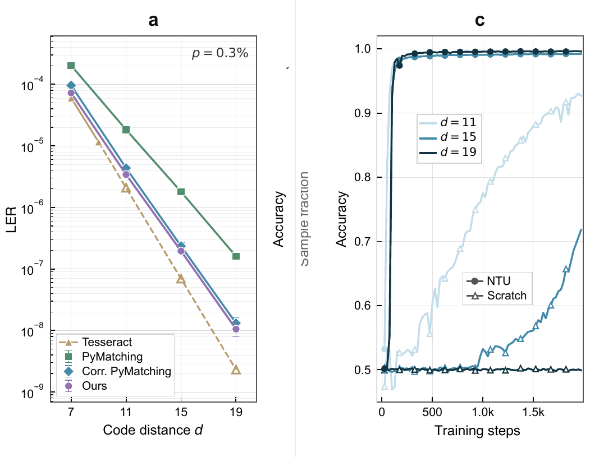
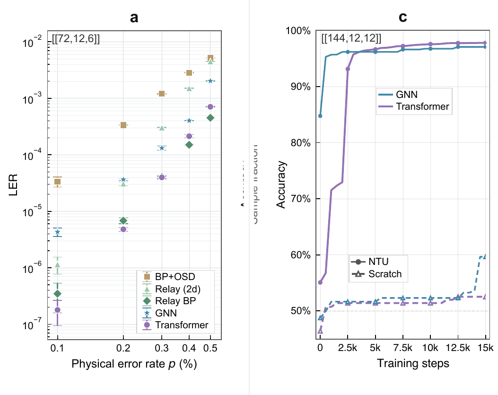

Data qubits
The physical qubits that carry the encoded quantum state. Increasing
n gives the code more redundancy and more measurement
data for the decoder.
Neural Transfer Unification for quantum error correction
This project studies scalable neural decoders for quantum error correction. The key idea is to map the spatial, temporal, and scale-invariant structure of quantum codes into neural network design, so a decoder can transfer local error knowledge from small codes to larger, fault-tolerant regimes.
Introduction to neural decoding
A quantum error-correcting code stores k logical qubits in
n noisy data qubits. The code distance d
measures the minimum number of physical faults needed to cause an
undetected logical error. Larger d improves protection,
but also makes the decoding problem larger.
The physical qubits that carry the encoded quantum state. Increasing
n gives the code more redundancy and more measurement
data for the decoder.
The protected qubits represented by the code space. Surface-code
memory experiments often use k = 1, while BB codes can
encode multiple logical qubits.
The fault tolerance scale. A decoder must remain accurate as distance grows and the syndrome history expands across space and time.
The rotated surface code is a planar topological code. Its local stabilizer pattern is geometrically transparent: data qubits live on a two-dimensional lattice and nearby checks detect local error chains.
Bivariate bicycle codes, or BB codes, are quantum LDPC codes with a quasi-cyclic algebraic structure. Their Tanner graphs are less visually local than a surface-code lattice, but they still have compact polynomial neighborhoods that repeat across the code.
[[d^2, 1, d]] memory-code family
Examples used in the interaction: [[49,1,7]], [[121,1,11]], [[361,1,19]], [[625,1,25]].
Quantum LDPC family with cyclic polynomial neighborhoods
Examples used in the interaction: [[72,12,6]] and [[144,12,12]].
A neural decoder can infer which data qubits suffered errors, then apply a correction. This route naturally matches graph-based models on the Tanner graph, including neural belief-propagation variants.
A neural decoder can also skip explicit physical correction and
directly predict the logical error vector. In the paper's
NTU-Transformer, the input is a binary syndrome history and the
output is a k-dimensional logical-error probability.
Invariance in QEC and neural networks
Figure 1a motivates the transfer principle: the same local error motif reappears under spatial shifts, repeated measurement rounds, and code-size scaling. The global lattice changes, but the local algebraic relation between detectors remains reusable.
Spatial invariance says that the same local syndrome pattern can occur at different locations. Temporal invariance says the same detector relation repeats across syndrome extraction rounds. Scale invariance says that these local motifs persist when the code distance grows.
The paper represents detector neighborhoods by algebraic shifts. If
a detector is indexed as v = x^i y^j t^r, its local
neighborhood can be written as:
The motif M is local and reusable. Multiplying by
v moves the same pattern through space and time, which
is exactly the type of inductive bias a scalable neural decoder needs.

Local parity-check neighborhoods are repeated structures. Surface codes expose this geometrically; BB codes expose it through compact cyclic polynomials.
Figure 1b maps this locality into neural design: the model should attend to local detector neighborhoods before aggregating global information.
When local semantics are preserved, parameters learned on a small source code remain meaningful after the target code expands.
Main results
The main evidence is organized around the two code families. The project page focuses on panels a and c of the main figures: decoding performance and transfer behavior.
Surface code
For surface-code memory experiments, the model is trained on a smaller code and then transferred to larger distances. Figure 2a compares logical error rate across physical error rates, showing that the neural decoder remains competitive in the regime where matching baselines become strained by correlated, degenerate detector events. Figure 2c isolates the training effect: transfer initialization avoids the cold-start plateau seen when large-distance models are trained from scratch.

Bivariate bicycle code
BB codes test whether NTU depends on a visible two-dimensional
lattice. It does not: the model uses the algebraic Tanner-graph
neighborhood induced by the code. Figure 3a shows that the
NTU-Transformer performs strongly on the base BB code against
belief-propagation-based baselines. Figure 3c shows the larger
[[144,12,12]] target case, where transferred models
rapidly improve while scratch training can stagnate near random
guessing.

Methods
The paper uses a Transformer to directly predict logical errors, and a GNN-based neural-BP model to predict physical errors on the Tanner graph.
The Transformer receives a binary detector history
{0,1}^{T x m}, where T is the number of
syndrome rounds and m is the number of detectors per
round. It outputs [0,1]^k, the predicted logical-error
probabilities.
The stem embeds detector events with local code geometry, so early features already know which detector neighborhoods are physically related.
Within each syndrome round, attention mixes spatially related detector features and preserves the local algebraic motif.
Along the time axis, recurrent processing tracks how detector events persist or move across repeated syndrome extraction rounds.
Final logical readout uses cross attention to aggregate the
spatiotemporal syndrome representation into k logical
status predictions.
The Transformer route treats decoding as a direct logical classification problem. Rather than outputting a correction on every data qubit, the model predicts whether each logical qubit has flipped. This is useful when the downstream task only needs logical status.
The architecture is built around the invariance story. Local detector perception is encoded first; spatial attention operates inside each round; temporal recurrence carries information along the measurement axis; and cross attention performs the final global logical readout.
The neural-BP route works on the Tanner graph and predicts physical error probabilities on data qubits. Messages pass between variable nodes and check nodes, following the code's parity-check structure.
Instead of using fixed belief-propagation updates, neural-BP learns parameterized aggregation weights. This keeps the graph-decoding inductive bias while allowing the update rule to adapt to realistic circuit noise and code-specific correlations.
Interaction
This browser-side sandbox is an explanatory visualization rather than
a decoder benchmark. It uses exact [[n,k,d]] code sizes
for the displayed examples, then illustrates how data-qubit errors
create detector events and why the same local motif can be reused by a
neural network.
Reference
@misc{yan2026efficientfoundationdecoders,
title = {Efficient foundation decoders for fault-tolerant quantum computing},
author = {Yan, Ge and Li, Shanchuan and Xiao, Shiyi and Ma, Pengyue and Cao, Hanyan and Pan, Feng and Du, Yuxuan},
year = {2026}
}